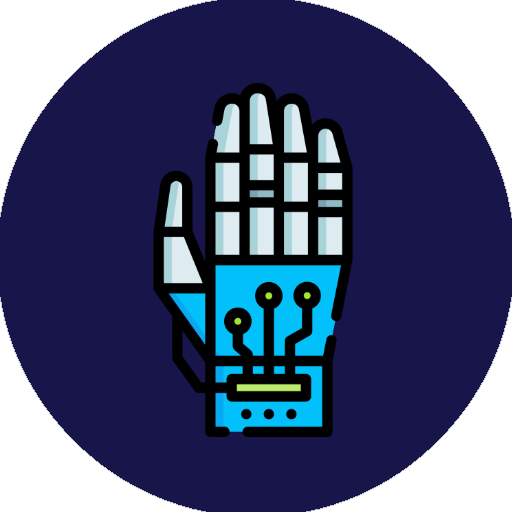
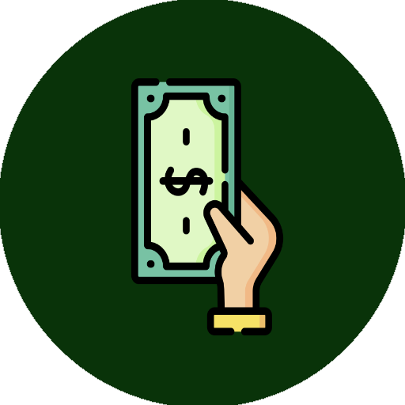
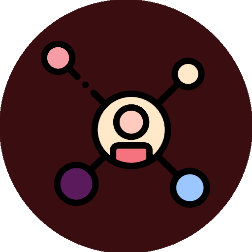

-

The Arm
Shake my HandUsing the popular AI program OpenPose, a Raspberry Pi with PCA9685 controller, and Python, I can control my robot’s movement with my own arm/hand through an ordinary webcam.
-

Predicting M&A with Knowledge Graphs
Make a PredictionI'm currently working on this one, it's pretty neat if I say so myself.
-

This Website
See the CodeI designed this entire website using code snippets from CodePen and a lot of Stack Overflow. I am currently hosting it using GitHub Pages; check out the code.
-
Lyrics Based Recommendation Engine
Discover a New ArtistI trained 3 Machine Learning NLP models to read hip-hop lyrics and store their findings in Elasticsearch. The result is an end-to-end verse recommender system that doesn't require user data.
-

Hip-Hop Knowledge Graph
See the ConnectionsUsing the same data source as Project Doom, I constructed a Neo4j knowledge graph and basic NLU Quesiton Answering capability to query the Hip-Hop GraphDB.
-

Project Doom
Analyze a VerseDoom is a program used for semantic analysis of rap verse lyrics, rhyming schematic optimization, and rapper classification from meta rhyme data. Named after the great rapper MF Doom.
-

The Crimes that Divide Us
Feel the DivideBy most measures, the U.S.A. has become a safer place for the average citizen. Crime rates have decreased, but is this decrease universal across the states and cities of America? During my Senior year, I created this project investigating a potential divide.
-

Private Cloud and Automation Server
Build a Cloud
Automate your HomeUsing a command line Linux distribution called DietPi on a Raspberry Pi B3, I built a private cloud for storage within my home network with a server to run Homeassistant automation tasks.
-

Data Driven Ad Headline Analysis
Click this Ad (;Check out the paper I wrote when working for the Harvard N.E.R.D. Business School lab my Senior Fall. I’d love to hear feedback from the data science and marketing community.
-

Psychiatric Recommender System
See the ModelAt Harvard, I worked with two brilliant computer scientists on a proposal to use a collaborative filtering recommender system to prescribe depression treatments based on their efficacy, correlated with patient demographics.
-

GameFriend
Make a FriendGamefriend is a simple database query system focused on storage and retrieval of video game information. Using Microsoft’s NLP API named LUIS, I created a system that takes in questions and outputs relevant database information.
(Icons downloaded from here)